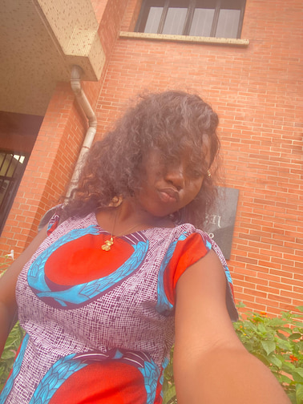

About Me
My name is Chloe Agbah. I am from Delta State Nigeria, but live in Lagos Nigeria. I am a student at BYU-Pathway Worldwide. I'm studying Web Development and Design. I am looking forward to learning more about web development and design through this course.
My Journey
Lagos, Nigeria’s largest city, sprawls inland from the Gulf of Guinea across Lagos Lagoon. Victoria Island, the financial center of the metropolis, is known for its beach resorts, boutiques and nightlife. To the north, Lagos Island is home to the National Museum Lagos, displaying cultural artifacts and craftworks. Nearby is Freedom Park, once a colonial-era prison and now a major venue for concerts and public events.